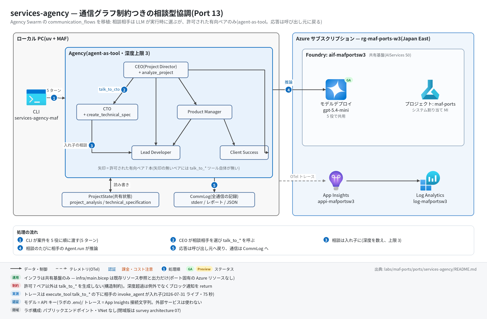

services-agency 実行ガイド
対象:
labs/maf-ports/ports/services-agency/(Port 13・パターン: 通信グラフ制約つきの相談型協調 — agent-as-tool)
最終確認: 2026-09-29 オフライン(69 passed・ruff clean・依存 agent-framework-core 1.19.0 / agent-framework-openai 1.14.4 / openai 3.20.0)/ ライブ: 2026-07-31(スモーク 1 passed・75 秒。当時の構成。Azure リソースは削除済み — 再デプロイ手順は §5)
正は本 Markdown。 人間用 HTML(同じディレクトリのrunbook.html)はpython3 labs/tools/build_runbooks.pyで生成する(HTML は直接編集しない)。設計判断と移植の学びは README。
1. このパターンで確かめること
- 5 役(CEO / CTO / PM / Lead Developer / Client Success)が、トップレベル 5 ターンの中で LLM の裁量により相談相手を選び(
talk_to_*ツール)、相手の応答が呼び出し元に戻って自分の回答に統合されること(agent-as-tool。グラフ Workflow には載らない理由は README 学び 1)。 - 通信は元アプリの
communication_flows(有向 7 ペア)の中でだけ起きること。非許可ペアはツール自体が生成されないので、プロンプトの出来に関係なく通信できない(構造制約)。 - 入れ子の相談は ContextVar で深度を数え、上限を超えると例外でなくブロック通知を return してモデルが続行できること。通信はすべて CommLog(stderr・レポート・JSON)とトレース(
execute_toolの下に相手のinvoke_agent)の両方に残ること。
2. 構成

| コンポーネント | 役割 | 課金 |
|---|---|---|
Agency(ローカル、agency.py) |
5 役の登録簿+通信グラフ+共有状態(ProjectState)+CommLog。talk_to_* を許可ペア分だけ生成し、相手の Agent.run を再帰的に呼ぶ |
なし |
役割ツール(project.py) |
CEO: analyze_project / CTO: create_technical_spec(共有状態で「分析 → 仕様」の順序を強制) |
なし |
| モデルデプロイ gpt-5.4-mini(共有基盤) | 5 役で共用。呼び出し回数はモデルの相談の仕方しだい(5 ターン+相談ぶん) | トークン従量 |
App Insights appi-<baseName>(共有基盤) |
OTel トレースの送信先 | 取り込み量従量(少量) |
本ポート固有の Azure リソースはない(infra/main.bicep は共有基盤の existing 参照と出力だけ)。
通信グラフ(sender → recipient。これ以外のペアにはツールが無い):
ceo ──▶ cto ──▶ developer
│ ├──▶ product_manager ──▶ developer
│ │ └─▶ client_manager
│ ├──▶ developer
│ └──▶ client_manager
developer / client_manager は出次数 0(誰にも話しかけない)。最長 2 ホップの DAG3. 前提
| 区分 | 必要なもの | 備考 |
|---|---|---|
| ツール | uv(Python は uv が取得。検証は 3.13) | オフライン実行はこれだけ |
| Azure(ライブのみ) | 共有基盤(infra/shared.bicep)のみ | 課金はモデルのトークンと App Insights の取り込み |
| 権限 | 実行時の認証は API キー(FOUNDRY_API_KEY)なのでデータプレーンの RBAC 付与は不要。デプロイには RG の共同作成者 |
— |
環境変数(labs/maf-ports/.env。雛形は .env.example。ライブ実行時のみ必要。本ポート固有の変数はない):
| 変数 | 用途 | 取得元 |
|---|---|---|
FOUNDRY_OPENAI_V1_ENDPOINT |
モデルの呼び先(https://<foundry>.openai.azure.com/openai/v1) |
shared.bicep / main.bicep の出力 openaiV1Endpoint |
FOUNDRY_MODEL |
モデルのデプロイ名(例: gpt-5.4-mini) |
shared.bicep の出力 modelDeploymentName |
FOUNDRY_API_KEY |
Foundry の API キー | az cognitiveservices account keys list -n aif-<baseName> -g <rg> |
APPLICATIONINSIGHTS_CONNECTION_STRING(任意) |
トレース送信先。未設定ならトレース無効で実行は続く | shared.bicep の出力 appInsightsConnectionString |
4. オフライン実行(Azure 不要・無料)
cd labs/maf-ports/ports/services-agency
uv sync --extra dev
uv run pytest # 期待: 69 passed, 1 deselected(ネットワーク不要)
uv run pytest -W error::DeprecationWarning # 期待: 69 passed
uv run ruff check . # 期待: All checks passed!オフラインテストが固定している主な挙動:
- 全 25 ペア(5×5)を総当たりし、許可 7 ペアにだけ
talk_to_*が生成される / 向きが保存される(test_no_tool_exists_for_disallowed_pairs/test_direction_matters)。実Agent上のツール構成も同じ(test_real_agents_carry_graph_generated_tools) - 多段の相談で応答が呼び出し連鎖を遡って統合される(
test_replies_integrate_up_the_call_chain)。全通信がグラフ内(test_all_agent_pairs_stay_within_graph) - 循環グラフ(ceo⇄cto)を注入すると深度上限で打ち切られ、ブロック通知が例外でなく文字列で返る(
test_infinite_ping_pong_is_cut_at_max_depth/test_blocked_call_returns_notice_not_exception) - トップレベル 5 ターンが元アプリと同じ順・同じ文言で走り、共有状態がターンをまたいで見える(
test_run_agency_runs_five_turns_in_original_order/test_shared_state_visible_across_turns) - 役割ツールの順序制御(分析前の仕様作成・二重分析はエラー文言を return)と元実装の癖の保存(
tests/test_project_tools.py) - 評価データセットの
must_commsがグラフ上達成可能で、forbidden_commsは構造的に不可能(tests/test_eval_dataset.py)
5. ライブ実行(Azure 必要・課金あり)
5.1 デプロイ
# 共有基盤が未作成なら作る(詳細は labs/maf-ports/README.md「実行の前提」)
cd labs/maf-ports
az group create -n rg-maf-ports -l japaneast
az deployment group create -g rg-maf-ports -f infra/shared.bicep \
-p baseName=mafports modelName=gpt-5.4-mini modelVersion=2026-03-17 modelCapacity=10
# モデル名・版は docs/survey/features/02-models.md で現行を確認(上は 2026-09-29 時点の例)
# 本ポートの main.bicep は出力の再掲だけ(リソースを作らない)。.env の値の確認用
cd ports/services-agency
az deployment group create -g rg-maf-ports -f infra/main.bicep -p baseName=mafports2026-07-31 の Wave 3 検証は RG rg-maf-ports-w3・baseName=mafportsw3 で行った(図の aif-mafportsw3 / appi-mafportsw3 はそのときの名前)。本ガイドの rg-maf-ports / mafports は自分の環境の名前に読み替える。
5.2 実行
uv sync --extra dev --extra live
uv run services-agency-maf "AI-assisted note sharing SaaS for university students." \
--name NoteHub --type "Web Application" --budget '$25k-$50k'
uv run services-agency-maf "..." --json --output runs/report.json # JSON(responses / communications / state)
uv run services-agency-maf "..." --max-depth 1 # 深度制御をライブで観察(§6 #4)
uv run pytest -m live # スモーク(NoteHub 案件)選択肢つきの引数: --type(Web Application / Mobile App / API Development / Data Analytics / AI/ML Solution / Other)・--timeline(1-2 months / 3-4 months / 5-6 months / 6+ months)・--budget($10k-$25k / $25k-$50k / $50k-$100k / $100k+)・--priority(High / Medium / Low)。$ を含む値はシェルで展開されないよう単引用符で囲む。
期待される出力の例(値と相談の有無は実行ごとに変わる。CLI の書式とテストの期待値から作った形の例):
tracing: App Insights 有効
[comm] user -> ceo (depth 0): Analyze this project using the AnalyzeProjectRequirements tool: Project Name: NoteHub ...
[comm] ceo -> cto (depth 1): We are scoping NoteHub, an AI-assisted note sharing SaaS ...
[comm] cto -> developer (depth 2): Can the core features be delivered in 3-4 months ...
[comm] developer -> cto: reply 1830 chars
[comm] cto -> ceo: reply 2410 chars
[comm] ceo -> user: reply 3120 chars
[turn] ceo done (3120 chars)
[comm] user -> cto (depth 0): Review the project analysis and create technical specifications ...
...
[turn] client_manager done (2650 chars)
# AI Services Agency — NoteHub ← ここから stdout(Markdown レポート)
## CEO's Strategic Analysis
...
## Communication Log
#1 user -> ceo [depth=0] '...' => reply 3120 chars
#2 ceo -> cto [depth=1] '...' => reply 2410 chars
...
## Shared Project State
{"project_analysis": {"name": "NoteHub", "complexity": "high", ...}, "technical_specification": {...}}6. 確認観点
| 確認 | # | 観点 | 確認方法 | 期待結果 |
|---|---|---|---|---|
| 1 | 正常系: 5 ターン完走 | §5.2 の 1 行目 | stderr に [turn] ceo → cto → product_manager → developer → client_manager の順に 5 行。stdout のレポートに 5 セクション+Communication Log+Shared Project State |
|
| 2 | 役割ツールの順序制御 | レポート末尾の Shared Project State(または --json の state) |
project_analysis が埋まる(CEO が analyze_project を呼んだ)。technical_specification も埋まれば CTO が分析後に仕様を作れた。canned 値(complexity=high / timeline=6 months)は元実装どおり |
|
| 3 | 通信グラフの遵守 | --json の communications から sender ≠ user の (sender, recipient) を列挙 |
すべて許可 7 ペアのどれか。1 件以上ある(0 件だとスモークの assert が落ちる。モデルの裁量なので案件を変えて再実行して観察) | |
| 4 | 異常系: 深度上限 | --max-depth 1 で実行し stderr の BLOCKED を探す |
2 ホップ目(例: ceo→cto の中の cto→developer)が [comm] ... BLOCKED (depth 2 exceeds limit) になり、それでも 5 ターンは完走する(ブロック通知は文字列で返るのでモデルが続行できる)。モデルが 2 ホップの相談をしなかった回は BLOCKED が出ない |
|
| 5 | 観測: 入れ子スパン | §7 の KQL とポータルのトレース詳細 | execute_tool talk_to_cto の子に invoke_agent cto、さらにその下に execute_tool talk_to_developer → invoke_agent developer がぶら下がる(CommLog の depth と一致) |
|
| 6 | 評価データセットとの突き合わせ(任意) | tests/eval_dataset.jsonl の 5 案件を CLI に渡し、communications のペアを must_comms と比較 |
観察記録として残す(発生は LLM 裁量なので合否ラインは設けない)。forbidden_comms は構造上 0 件 |
|
| 7 | コスト・後片付け | 1 実行のモデル呼び出し = トップレベル 5 ターン+相談ぶん(ツール呼び出し往復を含む。2026-07-31 のスモークは 75 秒) | 小さい案件で試す。使い終わったら §8 |
7. トレース・評価の確認
az monitor app-insights query --app appi-mafports -g rg-maf-ports \
--analytics-query "dependencies | where timestamp > ago(30m) | where name startswith 'invoke_agent' or name startswith 'execute_tool' | summarize count() by name | order by name asc"- 期待するスパン名:
invoke_agent ceo/cto/product_manager/developer/client_manager(トップレベル 5 件+相談された回数)、execute_tool analyze_project/execute_tool create_technical_spec/execute_tool talk_to_<recipient>。 execute_tool talk_to_xの件数と CommLog のエージェント間通信件数(ブロック分を除く)が一致する。親子関係はポータルのトレース詳細(エンドツーエンドのトランザクション)で見る。- 取り込みには数分の遅延がある。0 件なら CLI の最初の行に
tracing: App Insights 有効が出たかを確認。
8. 片付け
az group delete -n rg-maf-ports --yes --no-wait # 本ポート固有のリソースはないので、共有基盤を使い終わったら RG ごと削除--output で書き出した runs/*.json はローカルに残る(モデル出力を含むので共有時は注意)。
9. トラブルシューティング
| 症状 | 原因 | 対処 |
|---|---|---|
error: 環境変数が未設定: ...(終了コード 2) |
labs/maf-ports/.env が無い / 値が空 |
.env.example をコピーして shared.bicep の出力を転記 |
argument --budget: invalid choice |
$25k-$50k がシェルで展開された / 選択肢外の値 |
単引用符で囲む(--budget '$25k-$50k') |
| ライブスモークが「エージェント間通信(talk_to_*)が 1 回も発生しなかった」で落ちる | 相談するかはモデルの裁量(README の残リスク 1) | 再実行して観察。常に落ちるなら instructions の "Team communication:" 案内が消えていないかを確認 |
project_analysis が null のまま |
CEO が analyze_project を呼ばなかった(元アプリと同じ指示依存) |
再実行して観察。CEO のエントリプロンプト(roles.entry_prompt)が原文どおりかを確認 |
ツールが失敗して Error: Function failed. だけが見える |
MAF はツール例外の詳細をモデルに返さない(include_detailed_errors 既定 False) |
本ポートのツールは例外を投げず文言を return する設計。自作ツールを足すときも同じ方針にする |
| 401 / 404(DeploymentNotFound) | API キーの誤り / FOUNDRY_MODEL とデプロイ名の不一致 |
キーを取り直す。デプロイ名は shared.bicep の出力 modelDeploymentName |
10. 関連・更新履歴
- 設計判断と学び: README(Agency Swarm → MAF 対応表・三つ巴比較・分水嶺の 2 軸 3 値)
- 協調パターンの分水嶺(グラフ / handoff / agent-as-tool): tech-selection-guide 1-1 / architecture/11 判断フレームワーク
- A2A(別プロセス・別組織のエージェント呼び出し)の現状: features/03 Agent Service
- 関連ポート: game-design-team(Port 7)・research-handoff(Port 3)
| 日付 | 内容 |
|---|---|
| 2026-09-29 | 初版(agent-framework-core 1.13→1.19 / openai 2.51→3.20 に更新、コード変更なし。--max-depth 1 による深度制御のライブ観察手順を追加。図を v2〈日本語+処理順〉に更新) |